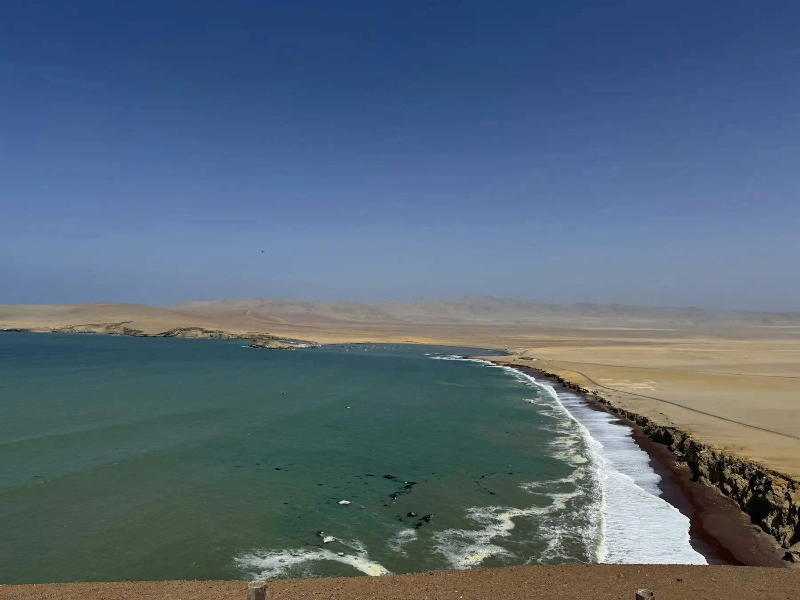
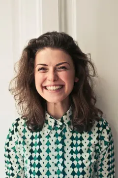

Tubo · Escuela de surf · Máncora
9 de 10 alumnos se paran en la tabla en su primera clase. Temporada 2025, 1 180 alumnos.
Nuestros alumnos nos escriben por WhatsApp apenas pisan la arena. Con su permiso, dejamos aquí algunos audios, con la transcripción palabra por palabra.
Clases a las 7:00, 9:30 y 16:00 frente al muelle viejo. Tabla, traje y fotos incluidos.

Valeria Chávez Arequipa · 3 clases, empezó de cero
Oye Checo, no sé si me escuchas con el viento... ¡me paré! O sea, dos segundos, pero me paré. Mañana a las siete estoy ahí otra vez, guárdame la tabla azul.
14 feb · 9:42
Checo, instructor Guardada. La marea baja a las 7:20, llega a las siete y calentamos en la arena.
Nicolás Ferreyra Córdoba, Argentina · paquete de 5 clases
Che, gracias por insistir con lo de remar más fuerte. Hoy agarré tres olas solo en La Punta y la tercera la llevé hasta la orilla.
3 mar · 10:15
Mei Higa Jesús María, Lima · clase privada
Le tenía miedo al mar desde chica. Carla no me soltó la tabla hasta que yo se lo pedí. Eso fue todo, y fue muchísimo.
22 ene · 17:04
Carla, instructora La última ola la remaste tú sola. Eso lo hiciste tú, no yo.
Andrés Paz Piura · surf trip de 4 días
Yo venía por el kite y terminé cambiando de deporte, ja. El video que me grabaron con el dron ya lo vio toda mi familia en el grupo, hasta mi abuela lo reenvió dos veces.
8 abr · 18:30
Sofía Llanos Chiclayo · clase grupal de las 7:00
Lo mejor fue el horario de la mañana: cero viento y el agua a veinticuatro grados. Ya reservé para Semana Santa con mis primas.
27 feb · 8:51
Joaquín Ruiz Santiago de Chile · 2 clases
Profe, la foto de la ola frente al muelle la puse de perfil en LinkedIn. Mi jefe me escribió preguntando si había renunciado.
11 mar · 12:20
Ana Castro Trujillo · 3 clases con su hijo de 11
Mi hijo y yo en la misma clase. Él se paró primero, obvio, pero yo me paré en la segunda. Gracias por la paciencia con los dos, Carla.
2 ene · 11:07